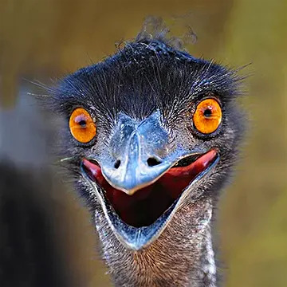

Scientific Name
Dromaius Novaehollandiae

Dromaius Novaehollandiae
Least Concern
Emu's have small useless wings in exchange for strong legs which allow them to run up to 30 miles per hour. Their feet have 3 toes and less bones and muscles compaired to other birds. Their feathers grow in pairs of two from follicles. They have a pouch in their throat that is a part of their windpipe. They can grow up to 5.7 feet. The males can weigh from 110 pounds to 121 pounds while the females only weigh up to 11 pounds

20-30 years
Seeds, fruits, flowers, young shoots, insects, small vertebrates
They form breeding breeding pairs in the summer. They lay 5-15 eggs at a time.
diurnal[1]
Dingoes, Wedge-tailed eagles